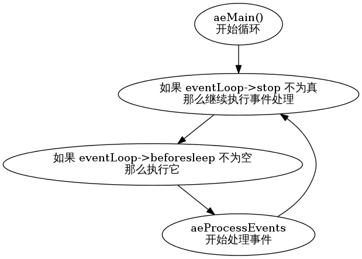

事件处理是 Redis 的核心机制之一，通过在客户端、文件、网络等类型的事件上进行多路复用 ，为 Redis 的高性能提供了保证。
在这篇文章中，我们通过分析 ae.c 和 ae.h 中的事件驱动 实现，了解 Redis 的事件处理模型以及实现，籍此加深对 Redis 的理解。
和其他所有事件驱动程序一样，Redis 的事件驱动程序本质上也是一个循环回路（loop）： 一些数据结构被表示为事件的当前状态，事件处理器在循环中不断修改这些数据结构，从而实现添加事件、删除事件、处理事件等功能。
在 Redis 中，事件状态由 aeEventLoop 结构来维持：
/* State of an event based program */
typedef struct aeEventLoop {
// 当前已注册的最大文件描述符
int maxfd; /* highest file descriptor currently registered */
// 允许注册的最大文件描述符数量
int setsize; /* max number of file descriptors tracked */
// 时间事件的计数器
long long timeEventNextId;
// 文件事件
aeFileEvent *events; /* Registered events */
// 待处理文件事件
aeFiredEvent *fired; /* Fired events */
// 时间事件（链表）
aeTimeEvent *timeEventHead;
// 停止事件处理？
int stop;
// poll API 所需的数据
void *apidata; /* This is used for polling API specific data */
// 在处理时间前要执行的函数
aeBeforeSleepProc *beforesleep;
} aeEventLoop;
Redis 有两种事件类型，分别是文件事件和时间事件。
aeEventLoop.events 数组保存当前服务器端的所有文件事件，其中每个文件事件用一个 aeFileEvent 结构来保存：
typedef struct aeFileEvent {
// 状态 mask
int mask; /* one of AE_(READABLE|WRITABLE) */
// 读操作函数
aeFileProc *rfileProc;
// 写操作函数
aeFileProc *wfileProc;
// 执行命令时所需的客户端资料
void *clientData;
} aeFileEvent;
aeFileEvent 结构可以同时持有 rfileProc 和 wfileProc 两个事件处理函数，但每次执行事件，只能有一个函数被执行：事件要么读取，要么写入，但不能既写入又读取。
clientData 保存执行命令时所需的客户端资料，每次执行事件时，它会作为参数被传入事件处理函数。
以下是一个执行读取事件的例子：
// fe 是一个 aeFileEvent 实例
fe->rfileProc(eventLoop, fd, fe->clientData, mask);
aeEventLoop.fired 数组保存当前服务器端所有待处理的文件事件，其中每个待处理事件用一个 aeFiredEvent 结构来保存：
typedef struct aeFiredEvent {
// 文件描述符
int fd;
// 状态 mask
int mask;
} aeFiredEvent;
尽管听上去 aeFiredEvent 像是一种新的事件，但它实际上不是 ——
每个 aeFiredEvent 结构都保存了一个待处理文件事件的信息，通过读取 aeEventLoop.fired 数组，事件处理程序可以知道 aeEventLoop.events 数组中，哪些事件可以被（无阻塞地）执行。
eventLoop.timeEventHead 是一个链表，保存了服务器端上的所有时间事件，每个时间事件用一个 aeTimeEvent 结构来表示：
typedef struct aeTimeEvent {
// 该时间事件的 id
long long id; /* time event identifier. */
// 时间
long when_sec; /* seconds */
long when_ms; /* milliseconds */
// 时间事件处理函数
aeTimeProc *timeProc;
// 在删除时间事件前要执行的函数
aeEventFinalizerProc *finalizerProc;
// 客户端资料
void *clientData;
// 指向下一时间事件，形成链表
struct aeTimeEvent *next;
} aeTimeEvent;
有三个属性需要额外说明：
Redis 服务器端会为每个时间事件赋予一个 id 值，这个 id 值就保存在 aeTimeEvent.id 属性中。
when_sec 和 when_ms 两个属性决定了时间事件执行的时间，通过将当前时间和这两个值对比，可以知道是否应该执行这个时间事件。
在删除时间事件之前，相应的 finalizerProc 函数会被执行一次， aeDeleteTimeEvent 函数的定义中说明了这一点。
Redis 的事件处理主循环由 aeMain 函数进行：
void aeMain(aeEventLoop *eventLoop) {
eventLoop->stop = 0;
while (!eventLoop->stop) {
// 如果有需要在处理事件之前执行的函数，那么运行它
if (eventLoop->beforesleep != NULL)
eventLoop->beforesleep(eventLoop);
// 开始处理事件
aeProcessEvents(eventLoop, AE_ALL_EVENTS);
}
}
这个事件循环的流程图如下：
aeProcessEvents 函数根据不同的 flags 参数来执行不同的动作。以 flags 参数为 AE_ALL_EVENTS 为例子，它完成以下三部分工作：
1）计算处理文件事件的阻塞时间，阻塞时间也可以通过 flags 参数显式地设置
2）处理文件事件
3）处理时间事件
aeProcessEvents 函数的完整定义如下：
/* Process every pending time event, then every pending file event
* (that may be registered by time event callbacks just processed).
* Without special flags the function sleeps until some file event
* fires, or when the next time event occurrs (if any).
*
* If flags is 0, the function does nothing and returns.
* if flags has AE_ALL_EVENTS set, all the kind of events are processed.
* if flags has AE_FILE_EVENTS set, file events are processed.
* if flags has AE_TIME_EVENTS set, time events are processed.
* if flags has AE_DONT_WAIT set the function returns ASAP until all
* the events that's possible to process without to wait are processed.
*
* The function returns the number of events processed. */
// 处理所有待处理的时间事件，以及所有待处理的文件事件
// 如果不给函数传入特定的 flag ，那么函数会一直 sleep ，
// 直到有文件事件触发，或者下一个时间事件发生（如果有的话）
//
// 如果 flags 为 0 的话，函数不做动作，直接返回
// 如果 flags 的 AE_ALL_EVENTS 被打开，那么所有种类的事件都会被处理
// 如果 flags 的 AE_FILE_EVENTS 被打开，那么文件事件会被处理
// 如果 flags 的 AE_TIME_EVENTS 被打开，那么时间事件会被处理
// 如果 flags 的 AE_DONT_WAIT 被打开，那么函数在处理完所有不须等待的事件后返回
//
// 函数的返回值为处理事件的个数
int aeProcessEvents(aeEventLoop *eventLoop, int flags)
{
int processed = 0, numevents;
/* Nothing to do? return ASAP */
// 无操作，直接返回
if (!(flags & AE_TIME_EVENTS) && !(flags & AE_FILE_EVENTS)) return 0;
/* Note that we want call select() even if there are no
* file events to process as long as we want to process time
* events, in order to sleep until the next time event is ready
* to fire. */
// 如果文件事件的个数不为空
// 或者 AE_TIME_EVENTS 被打开，且没有打开 AE_DONT_WAIT
// 那么执行以下语句，设置处理文件事件时所使用的时间差
if (eventLoop->maxfd != -1 ||
((flags & AE_TIME_EVENTS) && !(flags & AE_DONT_WAIT))) {
int j;
aeTimeEvent *shortest = NULL;
struct timeval tv, *tvp;
// 如果 AE_TIME_EVENTS 被打开且没有打开 AE_DONT_WAIT
// 那么查找执行时间离现在最近的一个时间事件
if (flags & AE_TIME_EVENTS && !(flags & AE_DONT_WAIT))
shortest = aeSearchNearestTimer(eventLoop);
// 如果最近时间事件不为空的话。。
if (shortest) {
long now_sec, now_ms;
/* Calculate the time missing for the nearest
* timer to fire. */
// 计算距离最近时间事件发生还需要多少时间
aeGetTime(&now_sec, &now_ms);
tvp = &tv;
tvp->tv_sec = shortest->when_sec - now_sec;
if (shortest->when_ms < now_ms) {
tvp->tv_usec = ((shortest->when_ms+1000) - now_ms)*1000;
tvp->tv_sec --;
} else {
tvp->tv_usec = (shortest->when_ms - now_ms)*1000;
}
// 如果时间差小于 0
// 说明当前时间已经超过时间事件的执行时间了
// 那么将时间差设置为 0
if (tvp->tv_sec < 0) tvp->tv_sec = 0;
if (tvp->tv_usec < 0) tvp->tv_usec = 0;
} else {
/* If we have to check for events but need to return
* ASAP because of AE_DONT_WAIT we need to se the timeout
* to zero */
// 如果执行到这一步，说明没有时间事件
// 那么根据 AE_DONT_WAIT 的设置状态，设置时间差
if (flags & AE_DONT_WAIT) {
// 如果 AE_DONT_WAIT 被打开
// 那么将时间差设置为 0 ，也即是不等待
tv.tv_sec = tv.tv_usec = 0;
tvp = &tv;
} else {
// 否则，就一直等待（直到有文件事件触发，或时间事件触发）
/* Otherwise we can block */
tvp = NULL; /* wait forever */
}
}
// 处理文件事件
numevents = aeApiPoll(eventLoop, tvp);
for (j = 0; j < numevents; j++) {
// 根据 fired 数组，从 events 数组中取出事件
aeFileEvent *fe = &eventLoop->events[eventLoop->fired[j].fd];
int mask = eventLoop->fired[j].mask;
int fd = eventLoop->fired[j].fd;
int rfired = 0;
/* note the fe->mask & mask & ... code: maybe an already processed
* event removed an element that fired and we still didn't
* processed, so we check if the event is still valid. */
// 因为一个已处理的事件有可能对当前被执行的事件进行了修改
// 因此在执行当前事件前，需要再进行一次检查
// 确保事件可以被执行
if (fe->mask & mask & AE_READABLE) {
rfired = 1;
fe->rfileProc(eventLoop,fd,fe->clientData,mask);
}
if (fe->mask & mask & AE_WRITABLE) {
if (!rfired || fe->wfileProc != fe->rfileProc)
fe->wfileProc(eventLoop,fd,fe->clientData,mask);
}
processed++;
}
}
/* Check time events */
// 如果 AE_TIME_EVENTS 被打开
// 那么处理时间事件
if (flags & AE_TIME_EVENTS)
processed += processTimeEvents(eventLoop);
// 返回被执行事件的个数
return processed; /* return the number of processed file/time events */
}
aeProcessEvents 函数中最重要的两个动作分别是对 aeApiPoll 的调用和对 processTimeEvents 的调用：
aeApiPoll 获取所有可以不阻塞处理的文件事件。
processTimeEvents 执行所有可运行的时间事件。
以上两个函数都用于对前面介绍的几个事件结构进行操作，定义都非常直观，这里不再赘述，有兴趣的话可以直接看代码。
最后要提到的一点是，Redis 在几个常见的多路复用库之间实现了一个策略模式 ，并且会在编译时自动选择尽可能快的库：
// ae.c
#ifdef HAVE_EVPORT
#include "ae_evport.c"
#else
#ifdef HAVE_EPOLL
#include "ae_epoll.c"
#else
#ifdef HAVE_KQUEUE
#include "ae_kqueue.c"
#else
#include "ae_select.c"
#endif
#endif
#endif
以上就是本篇文章的全部内容了。
文章主要介绍了几个事件结构，事件状态结构，以及事件处理循环和事件处理器的定义。
因为边幅所限，一些函数的只是简单地做了介绍，没有详细地进行分析，如果对细节有兴趣的话，可以到 GitHub 上查看带注释的源码： https://github.com/huangz1990/reading_redis_source 。